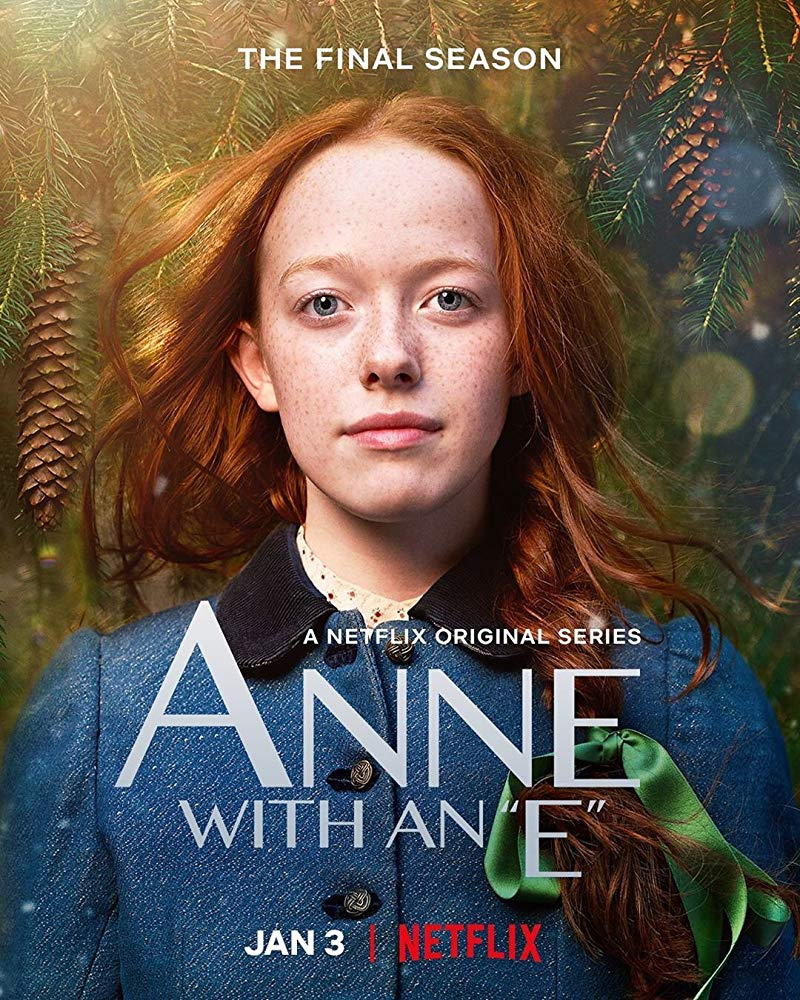

Anne with an E, initially titled Anne for its first season, is a Canadian drama television series based on the 1908 novel Anne of Green Gables by Lucy Maud Montgomery, and adapted by Emmy Award-winning writer and producer Moira Walley-Beckett. It airs on CBC Television in Canada, and elsewhere in the world it is available for streaming on Netflix. The series premiered on March 19, 2017 on CBC, and on May 12 internationally. On August 3, 2017, CBC and Netflix renewed the series for a 10-episode second season, which premiered on Netflix on July 6, 2018, and on CBC on September 23, 2018. CBC adopted the Anne with an E name beginning in the second season. In August 2018, CBC and Netflix renewed the series for a ten-episode third season, which premiered on September 22, 2019, on CBC and concluded on November 24, after which it was announced that the series had been cancelled. The final season was released on Netflix outside Canada on January 3, 2020.
